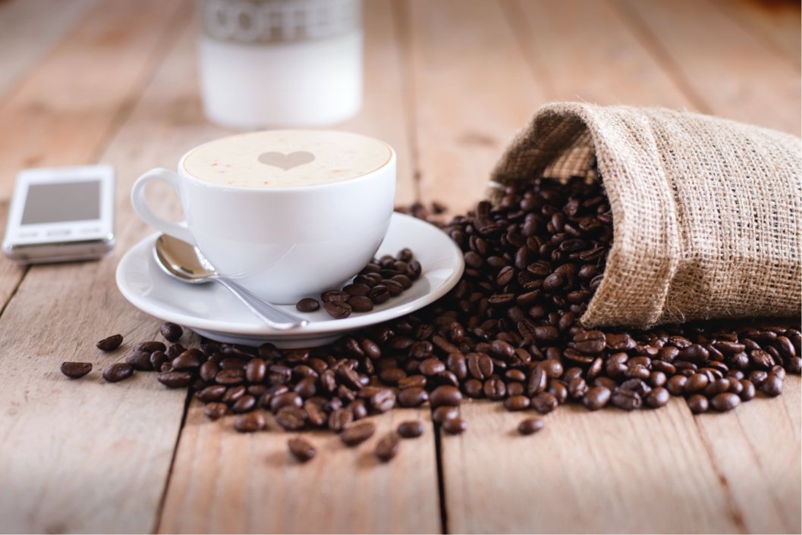
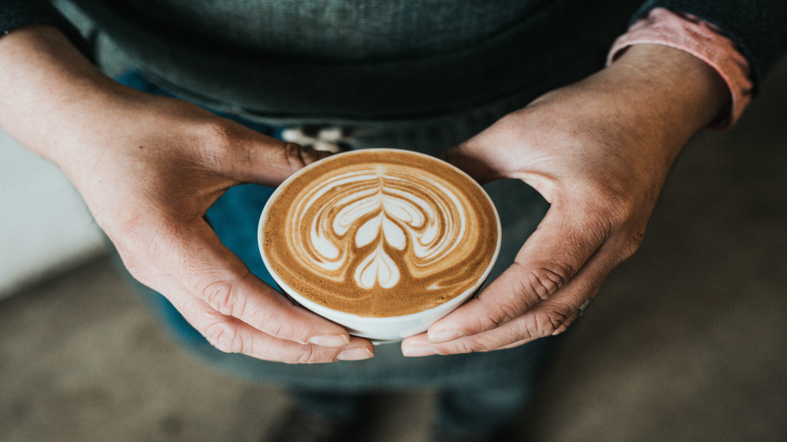
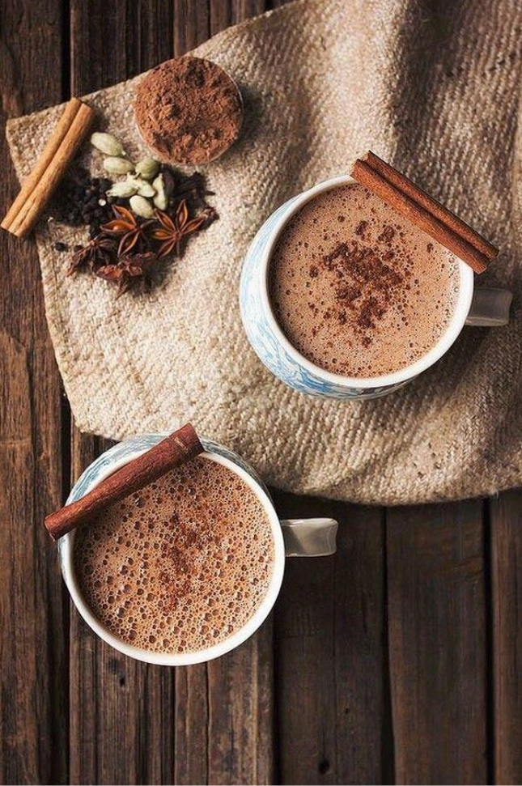
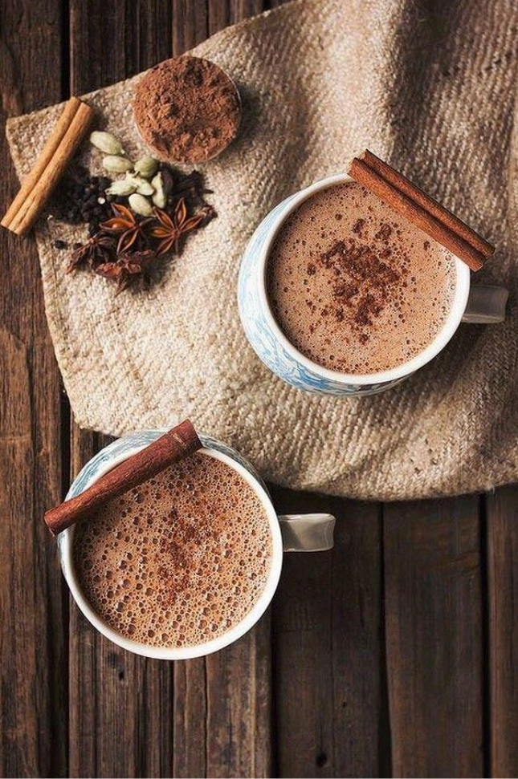
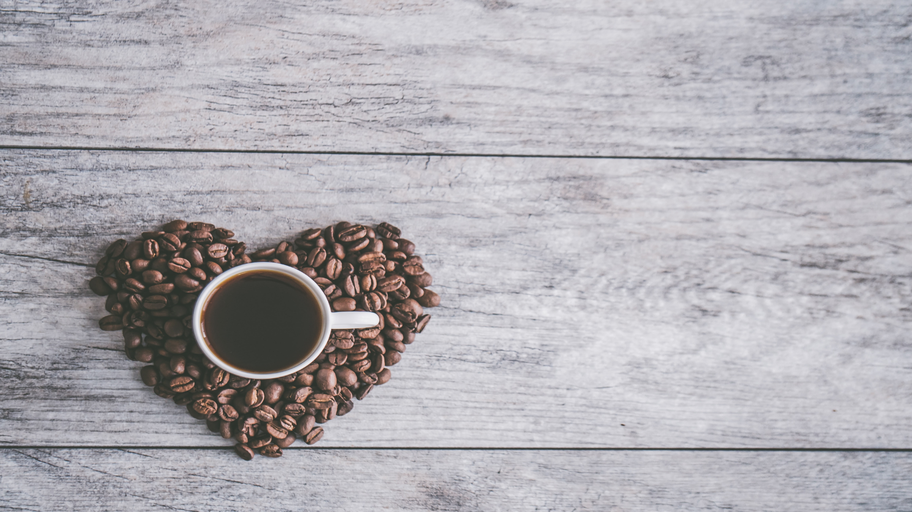

B I B .

Processing
Coffee berries and their seeds undergo several
processes before they become the familiar roasted
coffee. Berries have been traditionally
selectively picked by hand; a labor-intensive
method, it involves the selection of only the
berries at the peak of ripeness. More commonly,
crops are strip picked, where all berries are
harvested simultaneously regardless of ripeness
by person or machine.

Roasting
The next step in the process is the roasting of the
green coffee. Coffee is usually sold in a roasted state,
and with rare exceptions, such as infusions from green
coffee beans,[92] coffee is roasted before it is consumed.
It can be sold roasted by the supplier, or it can be home
roasted.[93] The roasting process influences the taste of
the beverage by changing the coffee bean both physically
and chemically. The bean decreases in weight as moisture
is lost and increases in volume, causing it to become
less dense. The density of the bean also influences the
strength of the coffee and requirements for packaging.
 

Decaffeination
Decaffeination of coffee seeds is done while
the seeds are still green. Many methods can
remove caffeine from coffee, but all involve
either soaking the green seeds in hot water
(often called the "Swiss water process")
or steaming them, then using a solvent to
dissolve caffeine-containing oils.
Decaffeination is often done by processing
companies, and the extracted caffeine is
usually sold to the pharmaceutical industry.

Storage
Coffee is best stored in an airtight container made of ceramic,
glass or non-reactive metal. Higher quality prepackaged
coffee usually has a one-way valve which prevents air from
entering while allowing the coffee to release gases.
Coffee freshness and flavor is preserved when it is
stored away from moisture, heat, and light.
The tendency of coffee to absorb strong smells
from food means that it should be kept away from
such smells. Storage of coffee in refrigerators is
not recommended due to the presence of moisture which
can cause deterioration.
Serving
Once brewed, coffee may be served in a variety of ways.
Drip-brewed, percolated, or French-pressed/cafetière
coffee may be served as white coffee with a dairy
product such as milk or cream, or dairy substitute,
or as black coffee with no such addition.
It may be sweetened with sugar or artificial
sweetener. When served cold, it is called
iced coffee.


Instant coffee
A number of products are sold for the convenience of
consumers who do not want to prepare their own coffee
or who do not have access to coffeemaking equipment.
Instant coffee is dried into soluble powder or
freeze-dried into granules that can be quickly
dissolved in hot water. Originally invented
in 1907, it rapidly gained in popularity
in many countries in the post-war period,
with Nescafé being the most popular product.
Many consumers determined that the convenience
in preparing a cup of instant coffee more than
made up for a perceived inferior taste,
although, since the late 1970s,
instant coffee has been produced differently
in such a way that is similar to the taste
of freshly brewed coffee.
About us
Founded in 2010 in Amsterdam, ETQ derived under the mindset of eliminating over-accessorized branding and focusing primarily on letting the quality of the product speak for itself.
Address
Singel 465
1012 WP Amsterdam
The Netherlands
Contact
Email us
Message us on WhatsApp
+31 (0) 202 615 614
Info
Shipping info
Careers
Wholesale
Follow us
Instagram
Facebook